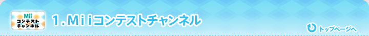
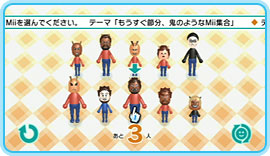
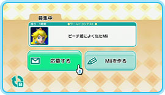
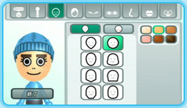

「投稿広場」では、世界中のＭｉｉ職人さんが投稿したＭｉｉを見ることができます。さらに、気に入ったＭｉｉは自分のＷｉｉ内に持ち帰ることができるんですよ。私も背の高〜いエキゾチックなＭｉｉを持ち帰ってみました。海外の職人さんが作ったＭｉｉのようですね。持ち帰ったＭｉｉは「似顔絵チャンネル」に登録されます。
もちろん、自分のＭｉｉを投稿することもできます。自分のＭｉｉが持ち帰られて、どこかの国の誰かのゲームの中に登場しているかもしれない…。そう思うだけで、ワクワクしませんか？
ちなみに、Ｍｉｉを探すときにおすすめなのは、表示中のＭｉｉの仲間を呼ぶ機能と、表示中のＭｉｉを作った職人さんが投稿した、その他のＭｉｉを呼ぶ機能。これらを使うと色々なＭｉｉを簡単に閲覧することができます。そして、好みのＭｉｉを見つけた場合は「気になる！」に登録するのも忘れずに。
「コンテスト」では、テーマ（お題）に沿ったＭｉｉを投稿し、どれだけテーマにあっているかを競い合います。また、コンテストに出場するだけでなく、審査員として参加することもできます。お題は実に様々で思わず笑ってしまうものも。また、本当にお題にそっくりなＭｉｉを作ってくるＭｉｉ職人さんもいて、ビックリすることもたびたびです。私も月に一回はのぞいています！
遊び方１：審査員として遊ぶ場合
エントリーされているＭｉｉの中から、出されているお題にピッタリだと思うＭｉｉを３人選びます。審査期間が終了すると、一番多くみんなに選ばれたＭｉｉの発表が行われると共に、テーマにあったＭｉｉを選ぶことができたかどうか、あなた自身の「目利き力」を知ることができます。
遊び方２：投稿者として遊ぶ場合
テーマに沿ったＭｉｉを「似顔絵チャンネル」で作成し、投稿してみましょう。審査終了後には、あなたの作ったＭｉｉがどれだけの人に選ばれたかの結果発表があります。似顔絵の上手な作り方は、ＮＯＭ2007年1月号でも紹介していますので、参考にしてくださいね。
これまでに、こんなコンテストが行われていました。
2008年2月1日現在、行われているコンテストに参加してみました。結果は次回のＮＯＭでご報告します！
■審査員として参加
まずは審査員として参加してみました。ただいま審査中のコンテストは「ピーチ姫によく似たＭｉｉ」です。
みなさん、そっくりなＭｉｉを作ってきていますね。いずれも力作そろいで、悩んでしまいますね〜。考えに考えて、３タイプ、まったく違ったピーチ姫を選んでみました。果たして私の「目利き力」はどうでしょうか？
■投稿者として参加
次はコンテストにＭｉｉを投稿してみます。お題は「バレンタインデーを楽しみにしている人」です。
私が投稿したＭｉｉはコレ。「初めてのバレンタインを楽しみにしている小学校一年生の男の子」をイメージしてみました。みなさんの支持を得られるでしょうか？ 結果が楽しみです！
2008年1月31日午前10時より、Ｍｉｉコンテストチャンネルの更新版が配信されています。
更新の内容は次のようになっています。
■「投稿広場」に、自分が投稿したＭｉｉを呼び出すボタンを追加
■「投稿広場」で、Ｍｉｉのプロフィール画面のＭｉｉ職人の表示から、そのＭｉｉ職人が投稿したＭｉｉを呼び出せるように変更
■「投稿広場」で、今日のオススメが10ページ表示できるように変更
■「コンテスト」で審査を中止したときに、以前に投票したＭｉｉへの投票情報が消されずに残るよう変更
■ペアレンタルコントロール機能に対応
■審査で選んだＭｉｉが再審査の際に表示されない場合があるなど、一部の不具合を修正
また、これに伴って古いＭｉｉコンテストチャンネルでは遊べなくなりますので、Ｗｉｉショッピングチャンネルで更新版をダウンロードしてくださいね。もちろんＭｉｉ職人の情報など、セーブデータは引き継がれますのでご安心を。